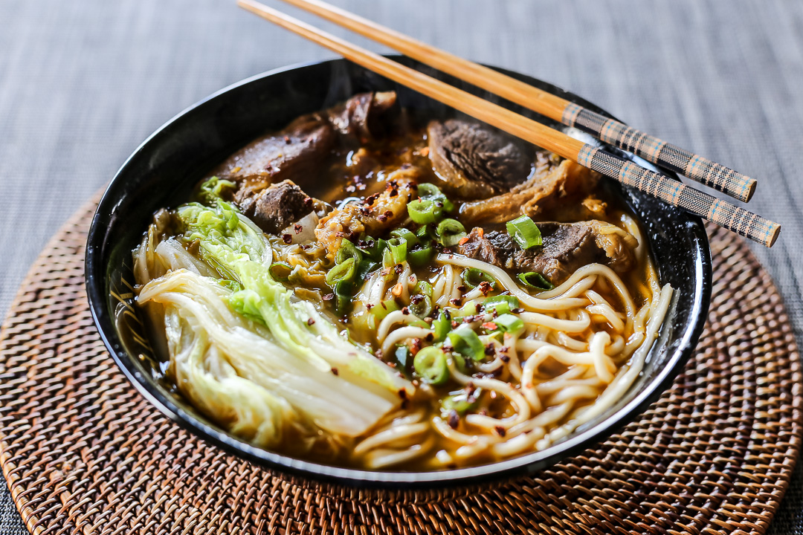

Beef Noodle Soup

Simple and tasty beef noodle soup that'll have everyone asking for the recipe!
Ingredients
- 1/2 cup beef
- 4 1/2 cups beef stock
- 1 Tbsp virgin olive oil
- 1/4 cup noodle
- 2 Tbsp unsalted butter
Steps
- Heat olive oil in a pan heated to medium high
- Add beef and stir for 1-2 minutes
- Add beef stock and unsalted butter, cover and cook for 30 minutes
- Stir in the noodles and let it sit for 3 minutes with the heat turned off before serving